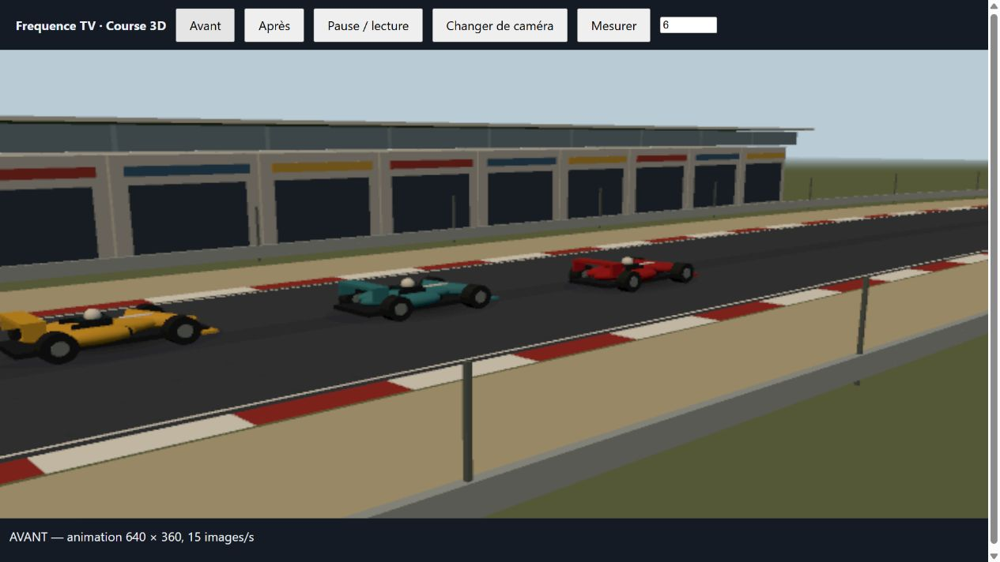
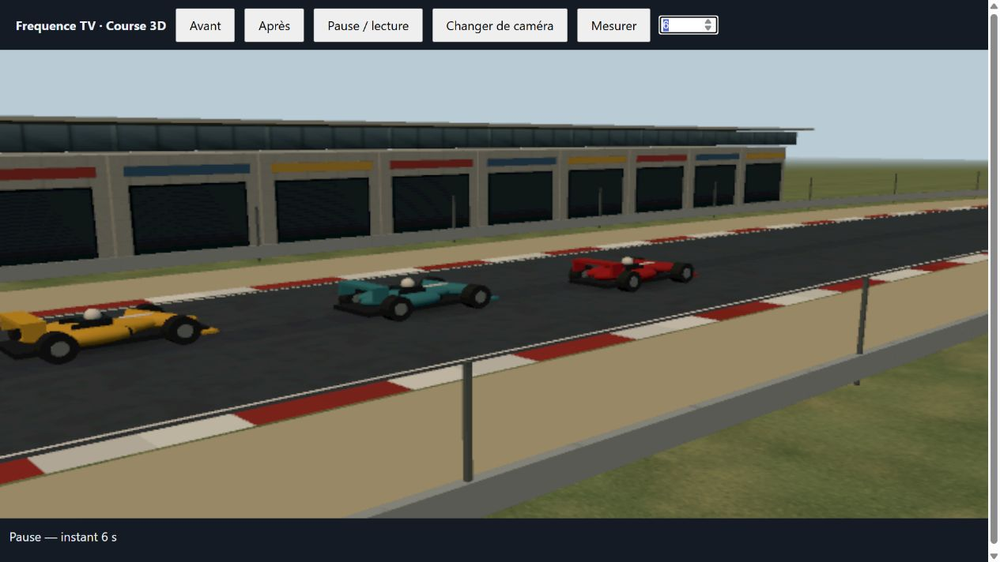
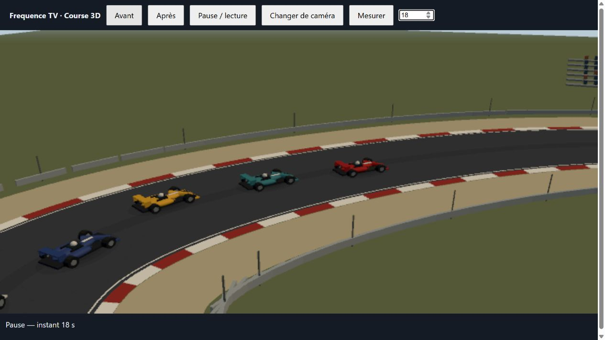
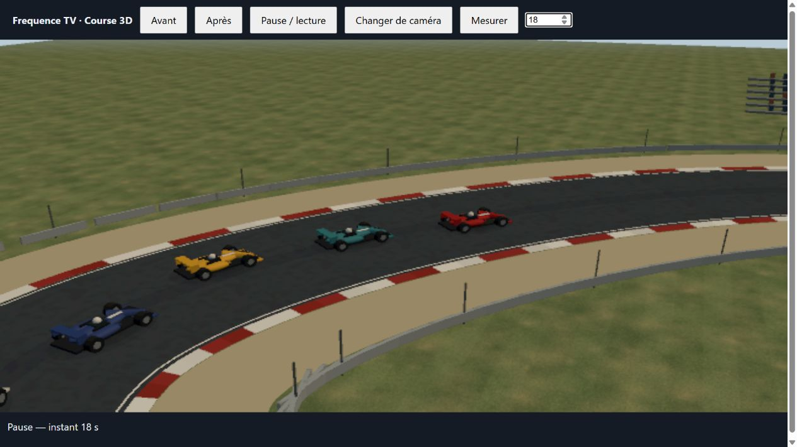

Avant · animation validée 2.3.17

Même caméra, même instant (6 secondes), mêmes voitures. Candidat local 2.3.18, non publié.




Asphalte granuleux et réparations fines · herbe nuancée · joints du béton · portes nervurées · reflets des vitrages.